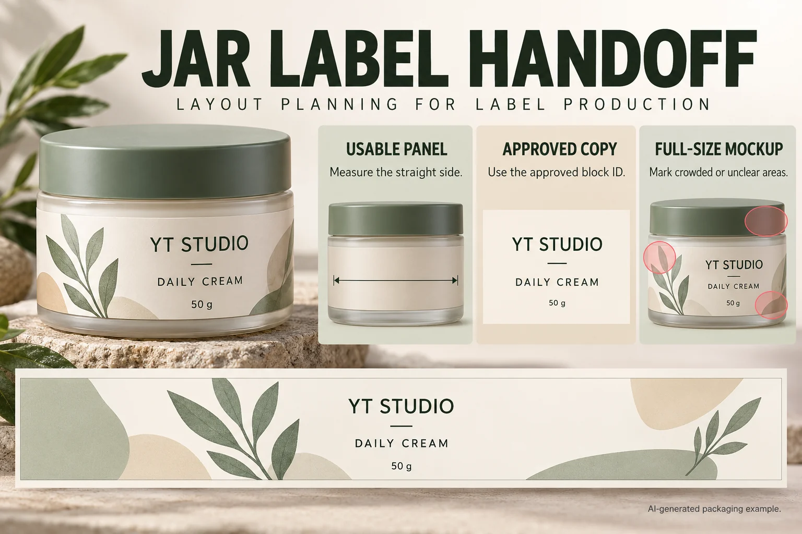

Measure the usable label panel first
Ask for the straight-sided label panel, the jar diameter and the clearance around the lid and base. A label that looks generous on a flat screen can crowd the shoulder of a short jar. For a wrap label, confirm the overlap or gap you want before layout begins. For a front label, leave visual breathing room so the product name remains easy to scan on a shelf.
Match the material to the jar and use case
Face cream, body butter and balm jars may encounter damp hands, bathroom storage or product residue. Treat those as separate review inputs. Ask for an identifiable face-stock, adhesive, printing and finish proposal suited to the actual container, rather than treating white film, clear film or a paper appearance as a universal winner. Keep the exposure evidence with the proposed sample.
Build a clear front-label hierarchy
The front panel usually works hardest when it leads with brand, product name, variant and net content. Supporting claims, fragrance notes or benefits should not compete with the product name. Reserve the side or back panel for directions, ingredients, batch fields and other required market information. Your responsible regulatory team should confirm the final wording for each destination market.
Use one system across jars, bottles and cartons
A cream jar is rarely the only item in a collection. Reuse the same type scale, color rules and variant coding across serum bottles, masks and outer boxes so buyers can recognize the range quickly. See our guide to a consistent skincare label system and compare finishes on the cosmetic label range.
Approve a proof with real production details
Send the jar photo or dieline, label dimensions, quantity, finish preference and artwork. A digital proof is the right place to check copy, barcode clearance, edge spacing and color direction before printing. It is much faster to adjust the proof than to correct labels after they arrive.
Resolve the physical space before shrinking the copy
A public face-cream seller question describes information that would not fit a small jar, an extra box adding cost and work, and difficulty obtaining the desired custom dimensions. The post does not establish the destination market, applicable copy rules or a final dieline. It supports asking a better layout question, not promising that moving information to a box or removing one will be acceptable.
Give the designer the jar with its lid fitted, a front and side view, and the proposed body-label and lid-label areas. A body measurement is not permission to print across a shoulder or joint. Identify the actual usable region and review a paper strip on the assembled container. Use the bottle and jar size guide for measurement preparation, then ask the receiving printer to confirm the final shape.
Bring the responsible team's approved copy before trying another layout. When multiple markets are involved, reference the block IDs and approved sources from the copy-mapping record. Do not create a second approval system in the jar drawing. This page handles physical fit; copy ownership, translation and market suitability remain attached to their existing review.
| Physical input | Reference to carry with it | Question to close |
|---|---|---|
| Body panel | Measured usable width/height; assembled-jar photos; proposed shape | Does the paper mockup remain within the intended area? |
| Lid or other component | Separate component ID and proposed position | Does it have a separate role without crossing an opening unintentionally? |
| Approved text | Existing copy-block ID, source revision and destination version | Has all assigned copy been placed without an unapproved rewrite? |
| Full-size mockup | Printed-at-size layout; photos showing front and wrap edges | Where is text crowded, obscured or difficult to read? |
| Printer feedback | Receiving process, proposed features and final file reference | What fit or reproducibility issue remains unresolved, and who owns it? |

Use the paper mockup to produce a decision
Place the actual-size layout on the intended jar and inspect it with the lid fitted. Mark the specific crowded line, shoulder conflict or wrap-edge problem. A note saying “too small” is difficult to act on; a marked line and an identified panel let the designer, printer and copy owner address different parts of the problem.
A larger jar with settled copy may need only a proportion adjustment within an agreed panel. A compact jar with the same copy may require another layout or packaging discussion before printing is considered. Keep those alternatives conditional. More label area does not itself establish that every required statement can move to that component, and a thinner font is not automatically printable or readable.
Ask the printer about the actual small features in the final-size export. The small-type and fine-rule review describes that production handoff; it is separate from legal type requirements. If copy changes, use the revision-reconciliation guide to control the change rather than editing the mockup alone.
Do not release the file while a critical copy block is unapproved, the usable panel is uncertain or the printer cannot identify the proposed shape. For custom cosmetic labels, prepare the jar photos, measurements, approved copy references, market versions and quantity per design in the inquiry message. Send the paper-mockup photos and artwork separately by email or WhatsApp.
Need a cosmetic jar label quote?
Prepare assembled-jar photos, usable panel measurements, approved copy references and quantity per design. Ask the printer to identify fit and print-feasibility questions.
Send Jar Details